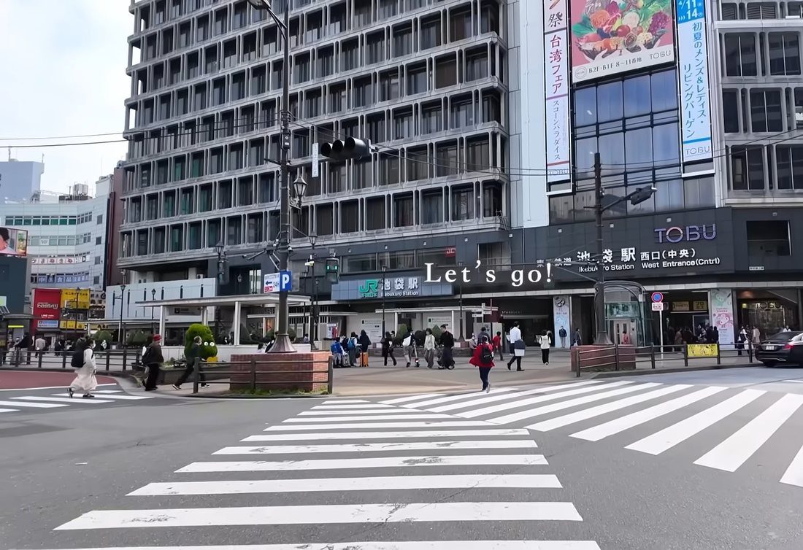
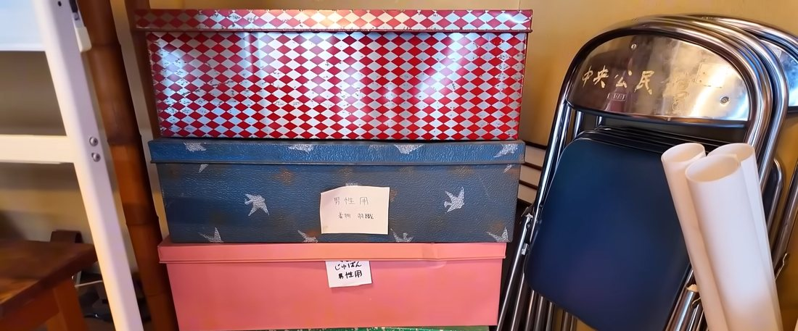
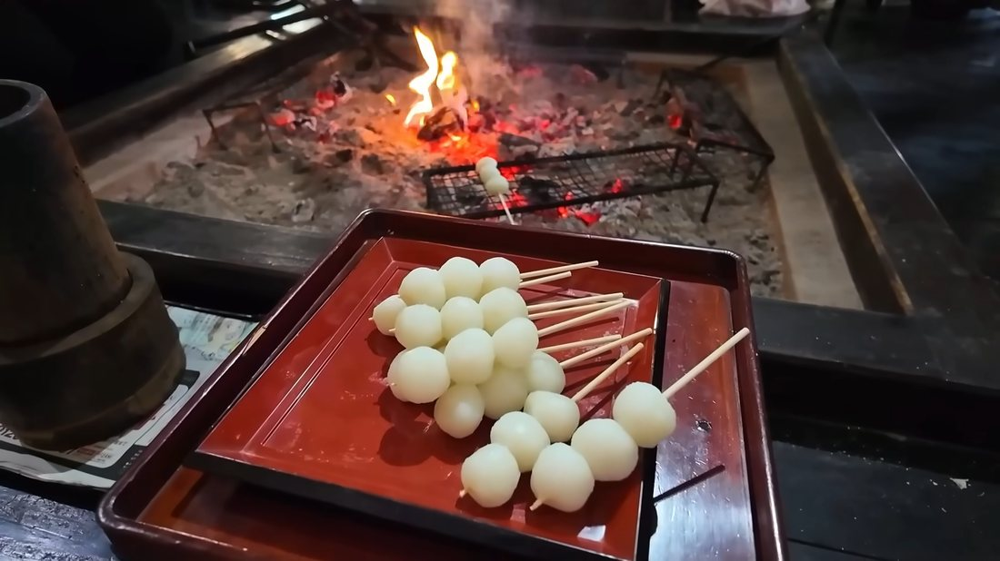
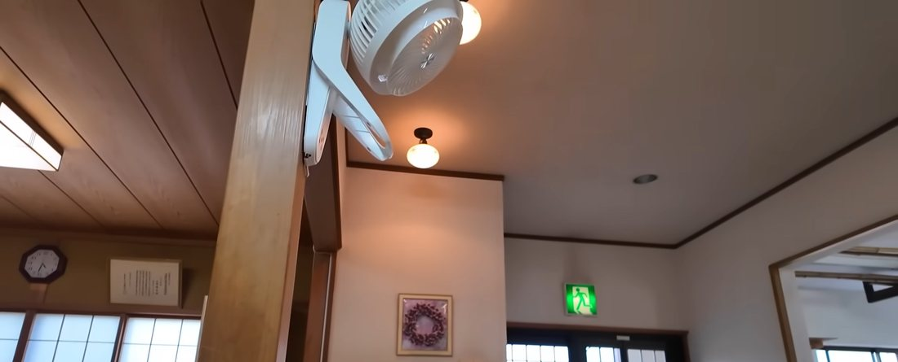
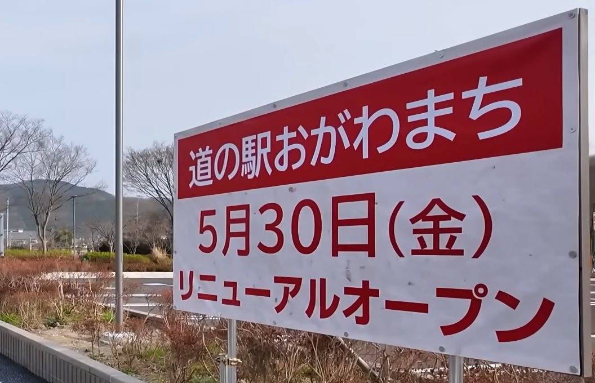
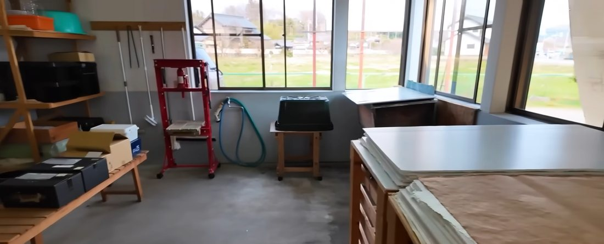
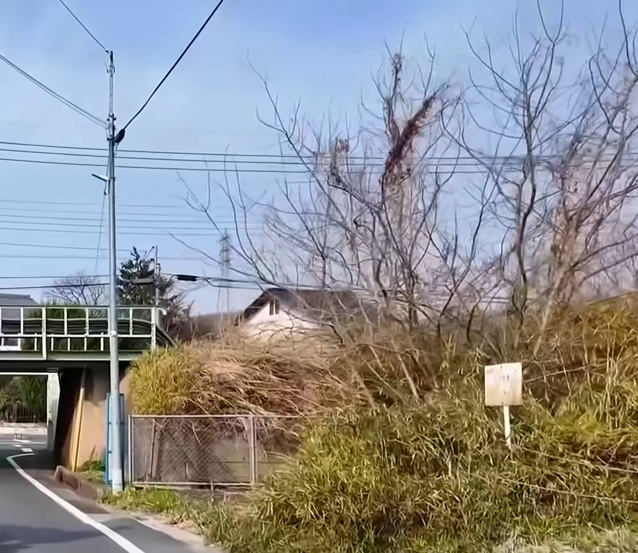
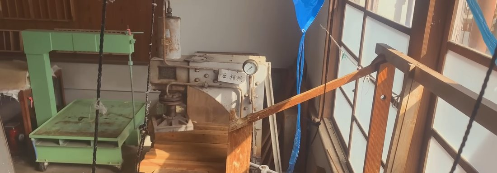
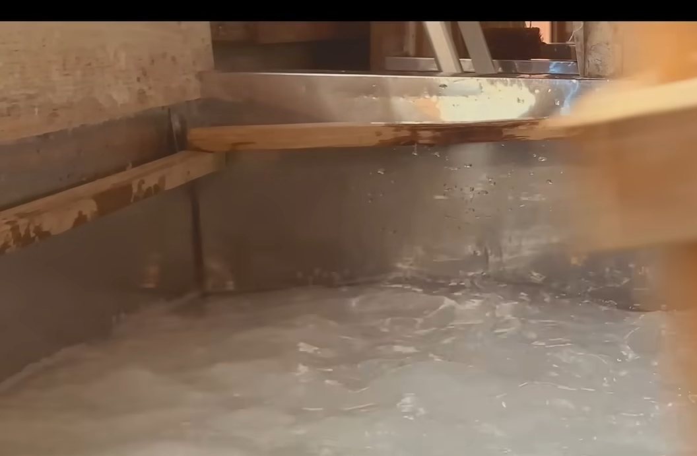
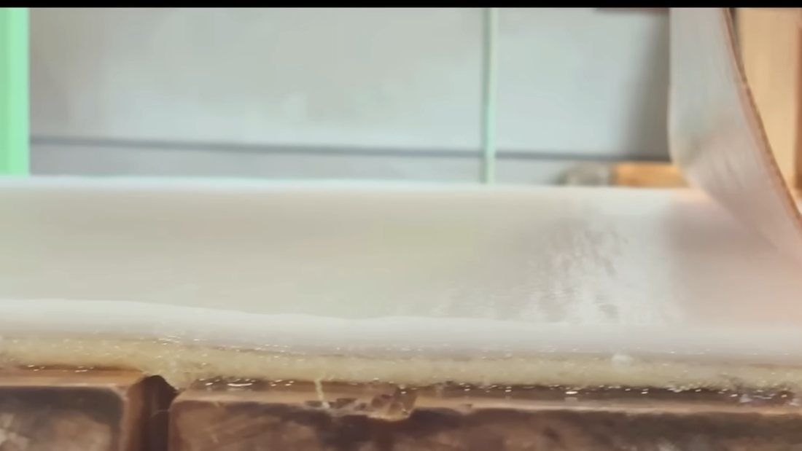

城市攻略 / 旅行日本 · 埼玉县小川町·东京近郊一日往返
小川町一日游：830 日元直达，9:00–18:00 不自驾
一位在东京生活多年的博主，用一天从池袋坐火车去埼玉小川町：租和服看江户古宅、骑车去道之驿吃午饭、体验和纸，傍晚吃当地炭火烤肉再回东京。下面按她给出的时间轴、票价和营业时间整理，照着走就行。
素材：YouTube 视频《如何便宜玩東京近郊？一日來回！日幣萬元以下！》（频道「MaoMao TV」）时长 24:24观看 22 万+

出发地：池袋站前。视频的一日行程从这里开始，晚上再回到这里。视频截帧 00:00:20
0先看结论：这一天值不值得去
830 日元
池袋 → 小川町单程票价 00:09:00
9:00–18:00
视频给出的整日时间轴 00:15:00
2500 日元
观光案内所和服租借 00:10:30
结论：适合想避开东京人潮、又不想自驾的人。视频里的路线几乎全部围绕小川町站展开：案内所就在车站旁，古宅打车约 10 分钟，之后骑车串起道之驿和和纸工坊，傍晚步行吃烤肉再走回车站00:11:30。
不适合的两类情况
- 周一或周二去。吉田家住宅与纸すきの村都是周一、周二休馆，核心体验会直接落空00:11:40。
- 临时起意、又想做和纸体验。体验要求 10 位以上并建议提前一周预约00:14:15。
1怎么去：池袋站搭川越特急，830 日元直达
视频给出的交通只有一条：从池袋站搭东武东上线「川越特急」直达小川町站，约 1 小时，成人单程 830 日元00:09:00。回程在 18:00 搭车返池袋00:18:00。

小川町站周边的街景：下车后大部分点位都能步行或骑车到达。视频截帧 00:09:00
210:15 到站：先去车站旁的观光案内所
抵站后第一站是小川町观光案内所，就在小川町站旁，营业 9:00–17:00，年末年初休息00:10:15。这里能拿到旅游地图、买特产，还集中提供三样当天会用到的服务。
| 服务 | 价格 / 说明 |
|---|
| 和服租借 | 2500 日元 |
| 普通自行车 | 550 日元/天 |
| 电动自行车 | 1320 日元/天 |
| 投币储物柜 | 可寄放行李（视频未给价格） |
顺序建议：先租和服（10:30）→ 打车去古宅 → 12:20 回案内所归还 → 12:40 租自行车00:12:40。这样不用背着和服跑后半程。
311:40 吉田家住宅：江户末期古民宅，10:00–16:30
从案内所搭出租车约 10 分钟到吉田家住宅——国家指定重要文化财、江户时代末期的古民宅，可看传统建筑与庭园00:11:40。开放时间 10:00–16:30，周一、周二休馆00:11:40。
12:20 回到案内所归还和服00:12:20。视频里反复出现的卖点是「东京没有的原风景」：老房子、木构、慢节奏的镇上生活00:04:35。

途中的炭火烤物：视频在古宅与道之驿两段都停下来吃东西。视频截帧 00:11:15

吉田家住宅一类的老宅室内：木构、纸拉门与庭园是这一站的看点。视频截帧 00:16:05
413:00 道之驿：吃午饭、买特产
12:40 从案内所租自行车出发，骑约 15 分钟到道の駅おがわまち00:12:40。13:00 在这里逛、吃午饭、买特产00:13:00。

道の駅おがわまち 的招牌；从案内所骑车约 15 分钟可达。视频截帧 00:15:05

道之驿内部：午餐与特产都在这里解决。视频截帧 00:15:45

从道之驿往和纸工坊骑去的乡间路段，车少、路平。视频截帧 00:14:25
514:15 纸すきの村：体验和纸，9:00–16:00
从道之驿骑车约 1 分钟到纸すきの村00:14:00，14:15 开始和纸制作体验与购物00:14:15。营业 9:00–16:00，周一、周二休馆；体验需 10 位以上，并建议提前一周预约00:14:15。

工坊内部保留了大量旧器具；和纸体验就在这类空间里进行。视频截帧 00:17:25

抄纸用的水槽：视频里工匠示范后，由体验者自己动手。视频截帧 00:17:05

抄好的湿纸被铺在框上；成品可以在工坊的贩卖区购买。视频截帧 00:17:45
615:45 晚餐：太田ホルモン焼き，步行 2 分钟
15:30 归还自行车，步行约 2 分钟到太田ホルモン焼き00:15:45。这是当地名店，主打炭火烤大肠，营业 16:00–22:30，周日休00:16:00。视频建议在 16:00 开门前就到，早点入店等位00:16:00。
两个时间要卡准
- 纸すきの村 16:00 关门，别把体验挪到晚餐之后00:14:15。
- 烤肉店 周日休，安排周末行程时先避开周日00:16:00。
7价格怎么算：不含餐饮约 4710 日元
把视频明确给出的价格加起来：往返火车 1660 + 和服 2500 + 普通自行车 550 = 4710 日元00:09:00。选电动自行车则把 550 换成 1320，合计 5480 日元00:13:35。
| 项目 | 价格 | 备注 |
|---|
| 池袋 ⇄ 小川町 | 830 × 2 = 1660 日元 | 成人单程 830 日元00:09:00 |
| 和服租借 | 2500 日元 | 案内所00:10:30 |
| 自行车 | 550 / 1320 日元 | 普通 / 电动，一天00:13:35 |
| 出租车（案内所 ⇄ 吉田家） | 视频未给价 | 单程约 10 分钟00:11:30 |
| 午餐 / 晚餐 / 特产 | 视频未给价 | 标题称「1 万日元以下」，本文未独立核算 |
8避坑清单
| 坑 | 怎么避 |
|---|
| 周一 / 周二到场 | 古宅与和纸工坊都休馆，换日期00:11:40。 |
| 想吃和纸体验却没预约 | 10 位以上成团，提前一周预约00:14:15。 |
| 和服穿到下午 | 12:20 回案内所归还，再换骑车装束00:12:20。 |
| 16:00 之后才想去纸すきの村 | 已关门；把它排在道之驿之后、晚餐之前00:14:15。 |
| 周日想吃烤肉 | 太田ホルモン焼き 周日休00:16:00。 |
9一页速查：照着这条时间轴走
09:00 池袋出发东武东上线川越特急，830 日元，约 1 小时00:09:00。
10:15 小川町站 → 案内所拿地图、租和服 2500 日元00:10:15。
11:30 打车 → 11:40 吉田家住宅车程约 10 分钟；古宅 10:00–16:3000:11:30。
12:20 归还和服 → 12:40 租自行车普通 550 / 电动 1320 日元00:12:40。
13:00 道の駅おがわまち午餐、特产00:13:00。
14:15 纸すきの村骑车约 1 分钟；体验和纸、购物00:14:15。
15:30 还车 → 15:45 步行 → 16:00 晚餐太田ホルモン焼き，周日休00:16:00。
17:30 步行回站 → 18:00 返池袋车站步行约 3 分钟00:17:30。